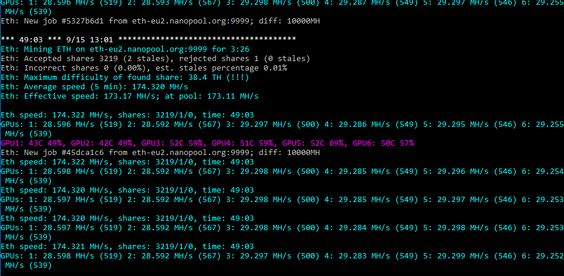

Fastest Ethereum/Ethash miner with lowest devfee
Current version (11.7) doesn't work!
Please update your version of Claymore Miner to latest available version!
-tt, -powlim, -cclock, -mclock, -tt, -fanmax, -fanmin options are supported for Nvidia too.y key also disables CrossFire.-y option.-esm 3 option is used. Claymore Miner 11.7
Developer Resources